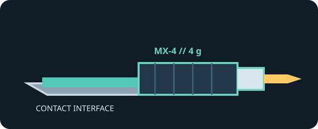

[ INDIVIDUAL COMPONENT // COOLING ]
ARCTIC MX-4 4 g
4 g syringe of thermal compound; the manufacturer describes the product as electrically non-conductive and non-capacitive.

IDENTIFICATION: Confirm the MX-4 package size and exact code ACTCP00007B; the compound itself is applied as a thin interface layer, not as a gap-filling pad.
Manufacturer specifications
| Catalog subcategory | Thermal Accessories |
|---|---|
| Exact model / code | ARCTIC MX-4, 4 g package; ACTCP00007B |
| Material | Thermal compound with microparticles; the linked maker documentation does not disclose a full constituent formulation. |
| Package / dimensions | 4 g net content; no package or syringe dimensions specified in the linked manufacturer specifications. |
| Thermal conductivity | 8.5 W/(m·K), as listed in ARCTIC's MX-4 specifications. |
| Electrical properties | Electrically non-conductive and non-capacitive, per ARCTIC. |
| Compatibility | For processor/cooler thermal contact surfaces where the host cooling instructions specify paste. |
Application & compatibility cautions
- Disconnect power and clean old compound from the contact surfaces; apply only the amount and pattern directed for the processor and cooler.
- Do not use MX-4 to bridge a designed gap that requires a thermal pad, and do not assume non-conductivity makes contamination acceptable around sockets or connectors.
- Verify cooler mounting pressure and host instructions; renewed paste is needed when the cooler has been removed.
Manufacturer sources
- ARCTIC — MX-4 4 g product pageProduct identity, packaging, use, and manufacturer product details.
- ARCTIC Support — MX-4 documentationManufacturer support and specification material for the MX-4 line.
This static catalog entry is an identification aid, not a compatibility guarantee; check the current package and host documentation.